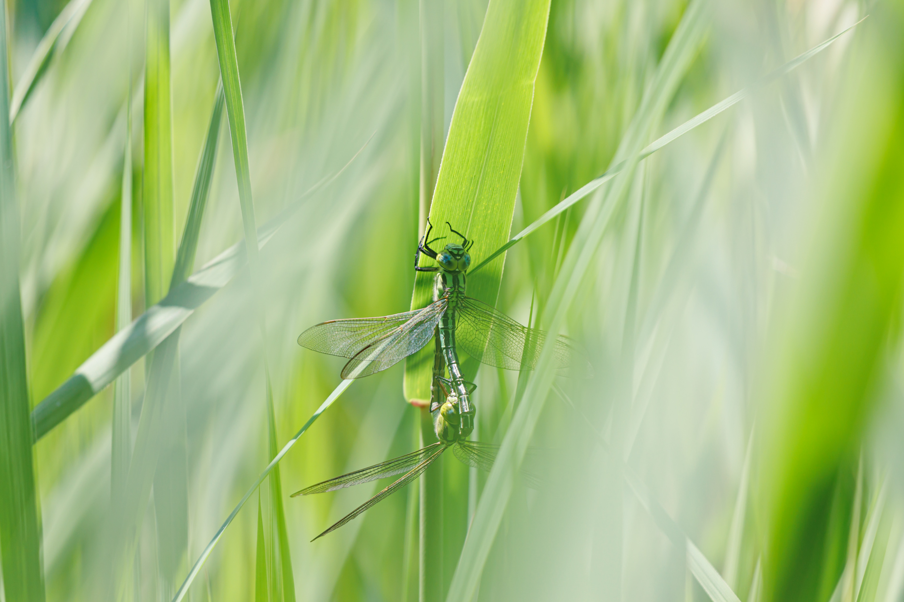

2022年5月29日 平地の池沼にて
本日は，オオモノサシトンボの撮り直しに出かけた．今回は5月22日の場所とは別の場所に行ったが一匹も見ることができなかった．潔く諦めて近くの沼地に探しに行く．すると，早速，アオヤンマとヨツボシトンボが多数飛んでいた．ヨシの中をよく探すと，アオヤンマのペアがいた．これはラッキーだと思い，ズームレンズに切り替える．アオヤンマのペアは午前中に二組ほど確認できたが，昼頃には見かけなくなった．単独のオスが，ヨシの中を泳ぐように飛んでいるのが印象的だった．比較的ゆっくり飛んでいるので撮れそうな感じはしたが，ヨシの中で背景と同化して見えるので飛翔撮影は難しい．またの機会に撮り直しに行きたい．

2022年5月29日 アオヤンマ Aeschnophlebia longistigma Selys
Canon EOS R6, EF70-300mm F4-5.6 IS II USM (300mm), 1/250, F5.6, ISO 200, Lightroom Classic development.